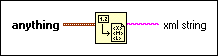

Flatten To XML Function
Owning Palette: LabVIEW Schema VIs and Functions
Requires: Base Development System
Converts any data type you wire to anything and converts it to an XML string according to the LabVIEW XML schema.
If anything contains the characters <, >, or &, the function converts those characters to <, >, or &, respectively. Use the Escape XML VI to convert other characters, such as ", to XML syntax.

 Add to the block diagram Add to the block diagram |
 Find on the palette Find on the palette |